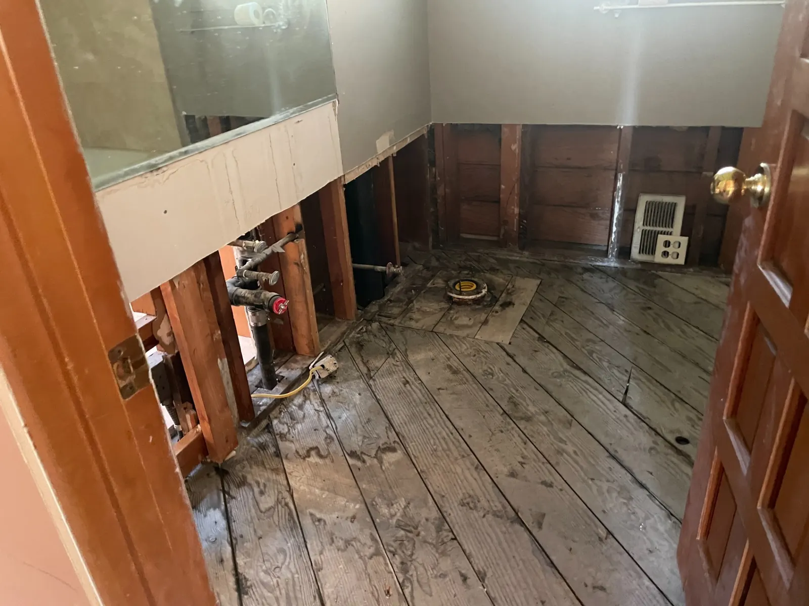
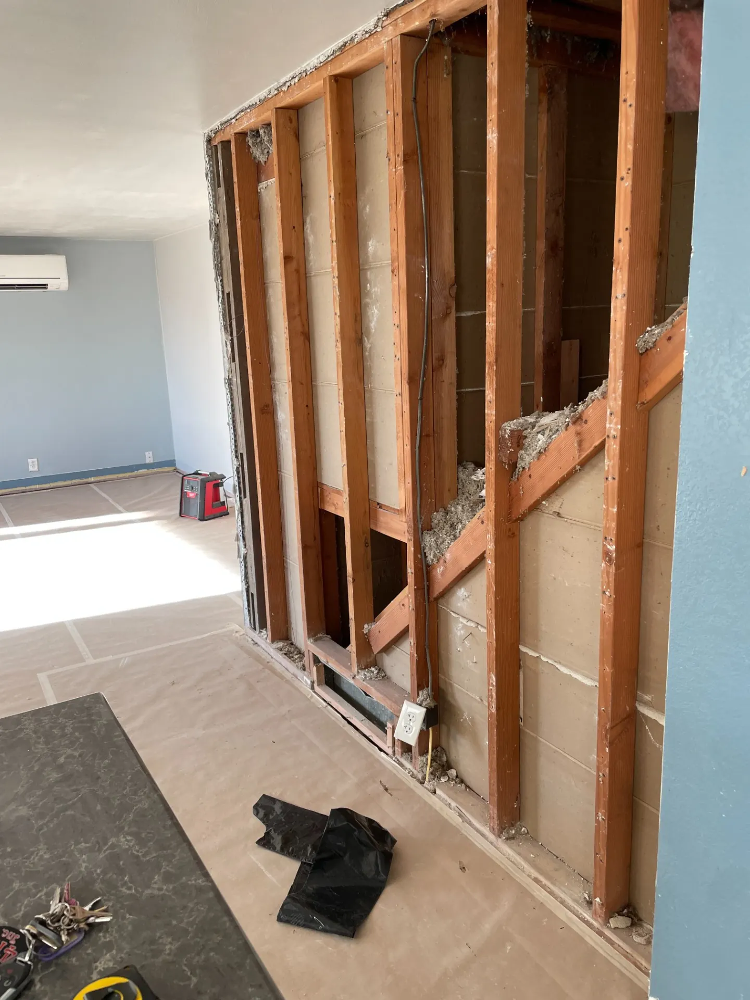
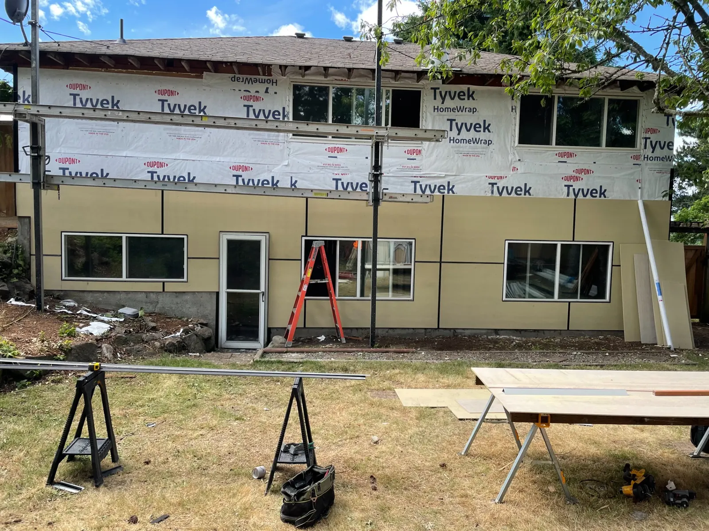

Water, Fire & Mold Damage Reconstruction
When the cleanup crew leaves, we put your home or business back together — better than before.
Property damage is stressful. We make the rebuild simple — scoping the repairs, working with your insurance documentation and restoring your property quickly and correctly.
Structure & Walls
Rebuilding what was removed during mitigation.
- Drywall repair
- Wall & ceiling rebuilds
- Framing repair
- Insulation
Finishes
Matching or upgrading finishes so the repair disappears.
- Flooring replacement
- Interior & exterior paint
- Custom cabinetry & trim
- Tile
Full Rebuilds
When the damage is extensive, we rebuild entire rooms.
- Kitchen rebuilds
- Bathroom rebuilds
- Full remodels
- Code upgrades
Restoration projects


Common questions
Do you work with insurance companies?
Yes. We work from your insurance scope and documentation and communicate with your adjuster as needed.
Do you do the water extraction / drying?
Our focus is reconstruction — rebuilding after mitigation is complete. We can coordinate with your mitigation company.
Can you upgrade finishes during the rebuild?
Yes. Many clients use the rebuild as a chance to upgrade; we'll price any upgrades separately from the insurance scope.
How quickly can you start?
Call us at (206) 659-5021 — we prioritize damage repairs to get you back in your space fast.
What our clients say
“I was impressed by the clear communication and timeliness throughout the project.”
“I couldn't be happier with the quality of work and their commitment to getting everything just right. Highly recommended!”
“Interlake Construction made the entire process stress-free, and the results were beyond our expectations.”
“The team was courteous, efficient, and incredibly skilled. They transformed my space and made it a dream come true.”